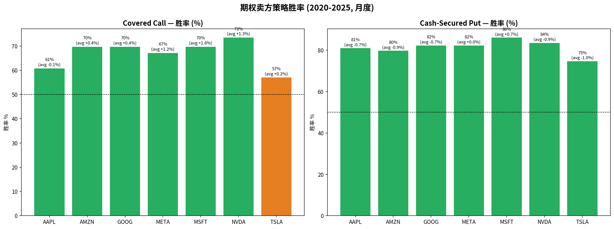
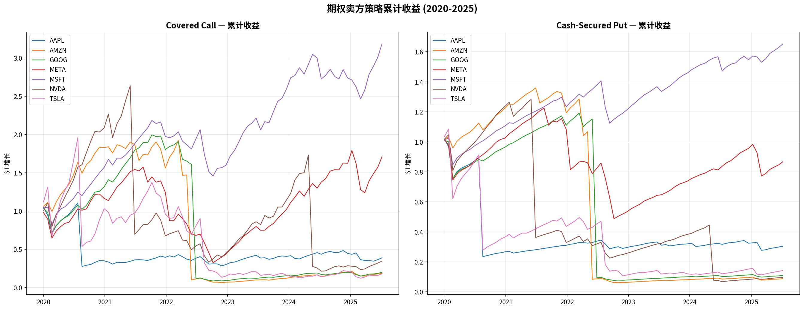
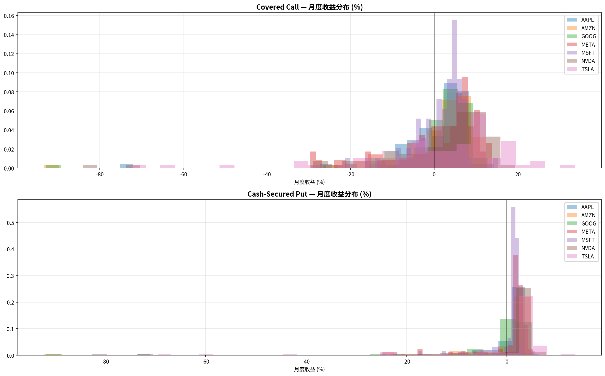
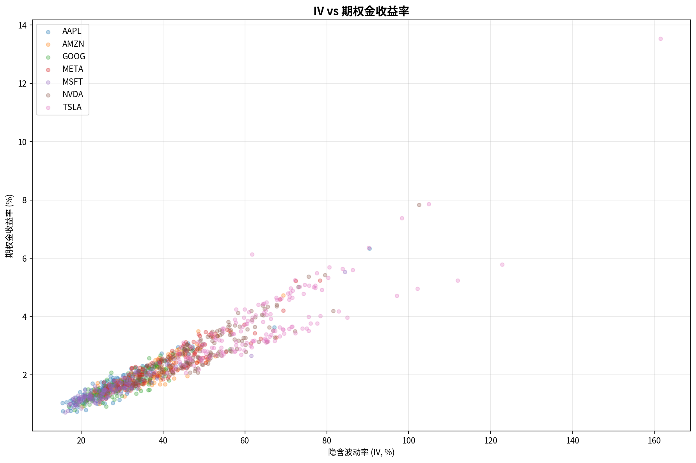
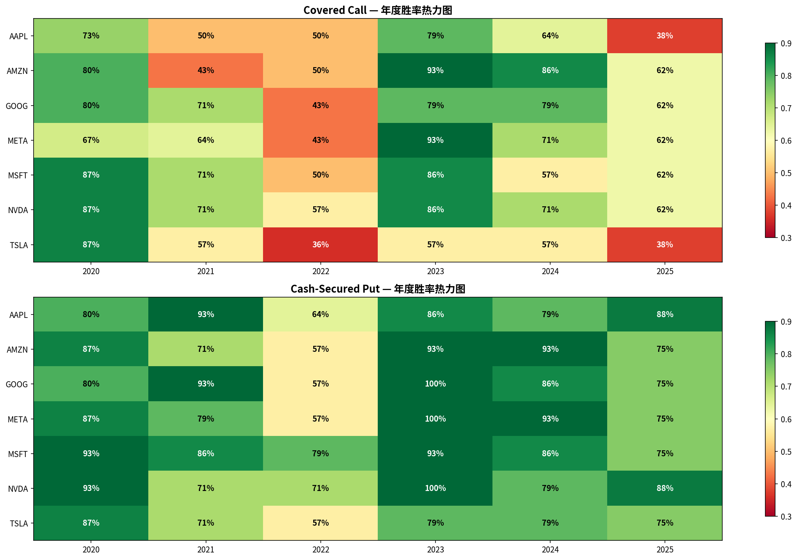

Options data: WRDS OptionMetrics 2020–2025, 18,665,143 records across 7 stocks (AAPL, AMZN, GOOG, META, MSFT, NVDA, TSLA)
Stock prices: OptionMetrics secprd daily close
Entry frequency: Monthly (~every 25 calendar days)
Option selection: Closest to target delta, ~30 DTE
Pricing: Mid-market = (best_bid + best_offer) / 2
Exit: Hold to expiration (no early management in base case)
Commissions: Not included (typically $0.65/contract at most brokers)
持有100股正股的同时，卖出1份虚值(OTM) Call期权。通过出售上涨权利换取期权金收入。适合温和看涨、愿意在一定价格卖出股票的投资者。
| Ticker | Trades | Win Rate | Avg PnL/月 | Avg Premium | Avg IV | 被行权率 | 累计收益 | Sharpe | Verdict |
|---|---|---|---|---|---|---|---|---|---|
| MSFT | 79 | 69.6% | +1.64% | 1.34% | 25.6% | 38.0% | +218% | 1.00 | ⭐ 最优 |
| META | 79 | 67.1% | +1.20% | 1.98% | 37.9% | 38.0% | +71% | 0.43 | ✅ 推荐 |
| NVDA | 79 | 73.4% | +1.27% | 2.47% | 48.4% | 41.8% | −66% | 0.26 | ⚠️ 谨慎 |
| AMZN | 79 | 69.6% | +0.42% | 1.73% | 33.5% | 36.7% | −82% | 0.11 | ⚠️ 谨慎 |
| GOOG | 79 | 69.6% | +0.36% | 1.49% | 29.1% | 35.4% | −80% | 0.10 | ⚠️ 谨慎 |
| TSLA | 79 | 57.0% | +0.17% | 3.16% | 62.2% | 30.4% | −82% | 0.03 | ❌ 避免 |
| AAPL | 79 | 60.8% | −0.15% | 1.51% | 28.0% | 39.2% | −61% | −0.05 | ❌ 避免 |
在账户中预留足够现金(= 行权价 × 100)的情况下，卖出1份OTM Put期权。如果股价不跌破行权价，收取全部期权金；如果跌破，被指派以行权价买入100股。适合"想买某只股票但想等更低价格"的投资者。
| Ticker | Trades | Win Rate | Avg PnL/月 | Avg Premium | Avg IV | 被指派率 | 累计收益 | Sharpe | Verdict |
|---|---|---|---|---|---|---|---|---|---|
| MSFT | 79 | 86.1% | +0.69% | 1.70% | 28.7% | 20.3% | +65% | 0.75 | ⭐ 最优 |
| META | 79 | 82.3% | +0.04% | 2.54% | 40.7% | 24.1% | −13% | 0.02 | ⚠️ 盈亏平衡 |
| GOOG | 79 | 82.3% | −0.71% | 1.92% | 31.8% | 19.0% | −89% | −0.22 | ❌ |
| AAPL | 79 | 81.0% | −0.66% | 1.87% | 31.0% | 31.6% | −70% | −0.24 | ❌ |
| NVDA | 79 | 83.5% | −0.91% | 3.24% | 51.1% | 21.5% | −90% | −0.23 | ❌ |
| TSLA | 79 | 74.7% | −0.99% | 4.29% | 64.9% | 30.4% | −86% | −0.26 | ❌ |
| AMZN | 79 | 79.7% | −0.92% | 2.18% | 35.9% | 20.3% | −91% | −0.28 | ❌ |
Wheel是Covered Call和Cash-Secured Put的组合循环：先卖Put → 被指派后转为Covered Call → Call被行权后回到卖Put。如此循环，持续收取期权金。
以MSFT为例: Put phase (SR 0.75) + Call phase (SR 1.00) 交替运行，预计综合年化 10-15%, 胜率 ~75%, 最大风险来自Phase 2期间的股价大跌。
同时卖出一份高行权价Put + 买入一份低行权价Put (同到期日)。限制了最大亏损的同时收取净期权金。比Naked Put安全得多。
| Metric | Cash-Secured Put | Bull Put Spread |
|---|---|---|
| Max Loss | K − Premium (巨大) | Spread Width − Premium (有限) |
| Capital Required | K × 100 (全额) | Width × 100 (少很多) |
| Win Rate | ~81% | ~70-75% (稍低) |
| Premium Collected | Higher | Lower (买保护扣除) |
| Tail Risk | 巨大 (COVID −90%) | 有限且已知 |
同时建立一个Bull Put Spread (下方) + Bear Call Spread (上方)。预期股价在一定区间内波动。双向收取期权金，双向定义风险。
最适合Iron Condor的股票特征: 低波动 + 窄range + 高IV/RV比 (卖的贵但实际波动小)。根据我们的分析: MSFT (vol 3.8%, 最稳) 和 AAPL (vol 4.9%) 最适合。





| Broker | Covered Call | Cash-Secured Put | Spreads | Iron Condor | 推荐 |
|---|---|---|---|---|---|
| Interactive Brokers | Level 1 | Level 2 | Level 3 | Level 3 | ⭐ 首选 (费用最低) |
| TD Ameritrade / Schwab | Level 1 | Level 2 | Level 2 | Level 2 | ✅ 易用 |
| Robinhood | Level 2 | Level 2 | Level 3 | Level 3 | ⚠️ 限制多 |
| Rule | Description |
|---|---|
| 最大单笔仓位 | 账户总值的5% (例: $100K账户最多$5K一笔) |
| 最大同方向暴露 | 账户的20% (所有Put side合计) |
| 止盈 | 期权金亏损 < 50%时平仓 (大约收回50%+ premium) |
| 止损 | 亏损 > 2× 原始premium时平仓 |
| Roll rules | 如果将要ITM: Roll out (延期) + Roll up/down (调整strike) |
| 月度review | 每月检查: 累计收益、最大回撤、sharp ratio是否恶化 |
| 配置 | 标的 | 策略 | 资金 | 预期月收益 | 最大单月亏损 |
|---|---|---|---|---|---|
| 核心仓位 | MSFT | Wheel (Put→CC) | $25,000 (50%) | +$250-$400 | −$3,000 |
| 增长仓位 | META | Covered Call | $10,000 (20%) | +$100-$200 | −$2,000 |
| 价差仓位 | NVDA/AAPL | Bull Put Spread | $5,000 (10%) | +$100-$150 | −$500 |
| 铁鹰仓位 | MSFT/AAPL | Iron Condor | $5,000 (10%) | +$100-$125 | −$500 |
| 现金储备 | — | Cash | $5,000 (10%) | — | — |
| 合计 | — | — | $50,000 | +$550-$875/月 | −$6,000 |
预期年化: 13-21% | 最大月度回撤: −12% | 胜率: ~70%
| 错误 | 后果 | 解决方案 |
|---|---|---|
| 在财报前卖期权 | IV crush但方向错了→巨亏 | 财报前15天不开新仓 |
| 被高IV吸引卖TSLA/GME Put | 一次暴跌抹平全年收入 | 只对你愿意持有的股票卖Put |
| 不设止损 | 小亏变大亏 | 2× premium即止损 |
| 仓位过重 | 单一股票暴跌影响全账户 | 单笔 ≤ 5% |
| 高VIX环境继续卖 | 波动率regime shift→连续亏损 | VIX > 30 暂停, 等回落 |
| 不管理被指派的股票 | 持股亏损扩大 | 被指派后立即转Covered Call |